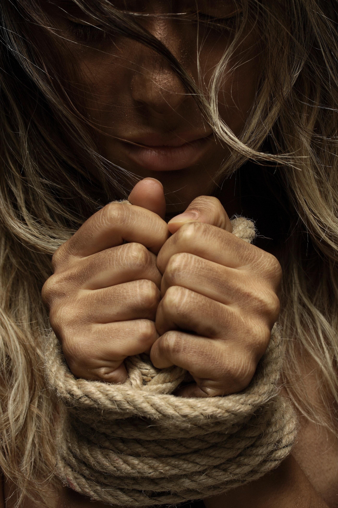

Ruined Soul Due To Sexual Harrassment
According to the United Nations survey statistics, every 14 women out of 100 were subjected to attempted rape. However, this statistic is far from accurate because many girls simply hide and are afraid to tell about their experience. Thus, it was with the heroine of my story, Natalie. I have known her since the third grade. She is four years older than me. Natalie was only in the eighth grade when the boys started paying attention to her. She had fiery red hair and emerald green eyes. Other girls at this age dream about a relationship, but she was not that type of person. Her only passion was tennis. All she wanted was not to upset or disappoint her parents. Like any teenager, she dreamed of studying and entering a prestigious university.
She said, "One day, I started noticing that a high school student from the eleventh grade was looking at me. That gaze scared me. It was wild and brutal. However, I tried not to pay attention to it and reassured myself that it was just my imagination. How wrong I was..."
She usually came home from tennis late at night. The same situation happened on that terrible day. "I came out of training and walked back home. Suddenly, I felt a sharp hit on my head," asserted the girl. When Natalie woke up, she did not immediately realize where she was. The girl was lying on a bed in a small room. It was so smoky that she wanted to swallow. But instead of the usual taste of saliva, there was the taste of blood in her mouth. She was beginning to understand what had happened. She tried to get up, but her body was trembling and did not obey at all. Then the young man opened the door and entered the room. She immediately recognized him and that creepy stare that gave her the goosebumps.
Natalie recalls that he came over and grabbed her by the hair. This guy threatened and said, “If you told someone, I would hurt your family. I took the photos and can show them if needed.” He was so insistent that her childish subconscious believed him.
Of course, Natalie could not tell anyone what had happened. Her eyes seemed to have lost that bright color. Furthermore, her hair was no longer shining in the sun. Everything that the young girl aspired, now became meaningless. This guy left a wound in the soul of a teenager. So, the whole world changed dramatically for her. He had taken away the joys of her life. Now she is twenty-three years old, but she still remembers this incident with pain. She shared her emotions and said, " I am still afraid of men and avoid going out late at night. I still feel disgusted with myself and my body."
Natalie gave up tennis after that fateful incident. He shattered her dreams. Thus, she replaced the goal of a prestigious university with the desire for an ordinary college. Now the girl regrets that she did not go to the police. Because after her, he dared to corrupt three other girls. Maybe if she had reported it to the police, he would not touch those girls. This guy is behind bars right now. Nevertheless, even the thought of him makes her body shudder. Anyway, Natalie is not going to give up. After a course of psychotherapy, she began to live again. She said, "I realized that I cannot change the past, but I can create a joyful future!"
Everyone who has experienced such a situation should remember that it is not shameful. It is a shame to be someone who has perpetrated or even dared to try to commit such a crime. Each girl should remember that the first thing is to contact the police. You are not alone. There are organizations like "Time's up" or "Me too" that help all the affected girls. You can turn to them for moral support or join them to help others. They can help with the treatment of the police or dealing with psychological trauma. You are not to blame because your dress is short and your makeup is beautiful. It is his fault because he could not control the animal urges. He is to blame because he used force against the weaker sex. Therefore, no matter what, do not be afraid to declare it and protect your rights.
